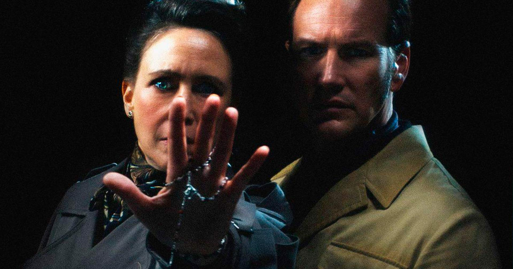

Aqui reportaremos as principais notícias no mundo do cinema
|
Nesta quinta-feira (4) nos cinemas brasileiros com um feito inédito: registrou a maior pré-venda da história para um filme de terror no país, com mais de 140 mil ingressos vendidos antes do lançamento. Estrelado por Patrick Wilson e Vera Farmiga, o longa marca o encerramento da franquia e retrata a investigação real dos Warren sobre a família Smurl, mesclando fatos e ficção. A produção conta com o retorno do roteirista David Leslie Johnson, do diretor Michael Chaves e tem James Wan e Peter Safran na produção, além de um elenco com nomes como Ben Hardy e Mia Tomlinson. |
 Saiba mais sobre clicando aqui |
|
O novo spin-off Game of Thrones: O Cavaleiro dos Sete Reinos, previsto para 2026, já está gerando polêmica entre os fãs antes mesmo da estreia. A série, que promete uma abordagem mais intimista ao focar nas aventuras de Sor Duncan e seu escudeiro Egg, terá apenas seis episódios por temporada, com duração de 30 a 35 minutos cada — o que muitos consideram insuficiente para um universo tão vasto como Westeros. |
Saiba mais sobre clicando aqui |
| Título da notícia | Descrição | Link |
|---|---|---|
| Spin-off da série Wandinha | A Netflix confirmou o desenvolvimento de um spin-off de Wandinha centrado no Tio Chico, interpretado por Fred Armisen. A série vai explorar mais sobre esse personagem querido da Família Addams, aproveitando o sucesso da 2ª temporada de Wandinha | Link do site da notícia |
| "Wicked 2": diretor revela detalhes de músicas inéditas fora da Broadway | O diretor Jon M. Chu revelou que Wicked: Parte 2 terá duas músicas inéditas, feitas especialmente para o filme. As faixas são focadas em Elphaba e Glinda, explorando temas como pertencimento, justiça e amadurecimento. O filme estreia em 20 de novembro nos cinemas. | Link do site da notícia |